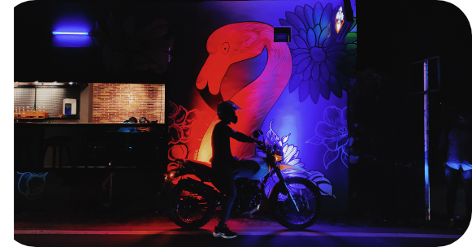

My career and experiences

me as photographer: I had the wonderful privilege of growing up in the wild, open and unspoilt surroundings of sothern part of India. I am a self taught Photographer who always like to experiment new things on photography. I got oppurtunities to work as freelance photographer in Product Photography, Wedding Photography, Modelling photography etc, which helped me to explore the possibilities of Proffesional Photography. As a photographer I am able to enjoy the visual magic of colours which makes me always happy
me as a videographer and video editor: The interest and passion on videogrphy started from my school days. Initially I started by using mobile phones and edited using simple video editing apps, Later started creating video contents by suing professional gadgets and always put time and effort to learn new tools and create new contents. I got experience on Ad-making, Wedding Videography, Travel Videography etc. I do freelance video making editing. Camera for videography: canon 5d mark 4. Editing softwares using: da vinci resolve blackmagic 16, adobe premiere pro 2021

me as a adevnture seeker: I am a person who has, enjoys, or seeks adventures. I always like travelling, exploring unexplored places. I always take long motor bike rides, drives in search of a new unique destination. i find time to trek into deep forests, camp there to enjoy the hidden beauty of this nature. I find fun in off-rod driving and riding .